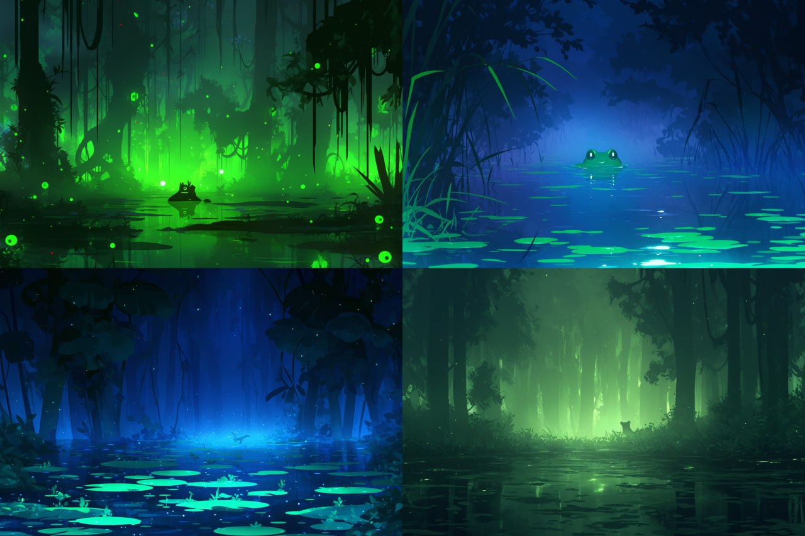

Midjourney — это одна из самых популярных нейросетей для генерации изображений. Она позволяет создавать уникальные визуальные произведения искусства на основе текстовых описаний. Пользователь может задать любой запрос, например, "фантастический город в стиле киберпанк" или "портрет кота в стиле Ван Гога", и нейросеть сгенерирует изображение, соответствующее описанию. Особенности: -Поддержка множества художественных стилей (реализм, абстракция, сюрреализм и др.). -Возможность загружать исходные изображения для их доработки или стилизации. Применение: создание иллюстраций, концепт-артов, дизайна для игр, обложек для книг и музыкальных альбомов.
Recraft — это инструмент для генерации изображений, который позволяет комбинировать несколько стилей и работать с текстом. Особенности: -Генерация изображений в различных стилях, включая минимализм, поп-арт и цифровую живопись. -Возможность объединять несколько изображений для создания коллажей или сложных композиций. Применение: дизайн, реклама, создание уникальных визуальных материалов для социальных сетей.
Kandinsky - это нейросеть, которая специализируется на генерации изображений с полной поддержкой русского языка. Особенности: -Генерация изображений в различных стилях, включая классическую живопись, современное искусство и цифровую графику. -Возможность дорисовки и удаления объектов на изображениях. -Удобный интерфейс и поддержка русского языка, что делает инструмент доступным для русскоязычных пользователей. Применение: создание иллюстраций, редактирование фотографий

AI Dungeon - это интерактивная платформа для создания текстовых приключений на основе искусственного интеллекта. Особенности: -Пользователь может создавать собственные сюжеты или играть в готовые сценарии. -Нейросеть генерирует ответы на действия игрока, создавая уникальные истории. -Поддержка различных жанров: фэнтези, научная фантастика, мистика и др. Применение: развлечение, развитие творческого мышления, создание собственных историй.
Pika Art - это инструмент для создания коротких видеороликов на основе изображений. Особенности: -Генерация роликов с использованием визуальных эффектов, таких как сдувание, разрезание или трансформация объектов. Применение: создание контента для социальных сетей
Kling — Платформа для генерации ИИ-видео. Особенности: Создание анимации по изображению. - Позволяет оживлять изображения, синхронизируя их с голосом -Имитация интонации и эмоций в голосе. Применение: создание анимационных роликов, озвучка видео, разработка персонажей для игр и фильмов.
OpenAI Jukedeck - это инструмент для генерации музыки на основе заданных параметров. Особенности: -Пользователь может выбрать стиль музыки (классика, электроника, рок и др.), настроение (радостное, грустное, энергичное) и длительность трека. -Нейросеть создает музыкальные композиции, которые можно использовать в проектах. Применение: создание фоновой музыки для видео, подкастов, игр и презентаций.
Soundraw - это генератор музыки на основе искусственного интеллекта. Особенности: -Использование нейросетей для создания новых звуков и комбинирования существующих. -Возможность настройки параметров музыки, таких как темп, тональность и инструменты. Применение: создание саундтреков, музыкальных композиций для медиапроектов.
Spleeter - это инструмент от Deezer для разделения аудиотреков на отдельные компоненты. Особенности: -Возможность разделения трека на вокал, бас, ударные и другие инструменты. -Высокая точность обработки звука. Применение: ремикширование музыки, создание караоке-треков, анализ аудиодорожек.